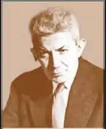

Альфред Маргул-Шпербер — румунський письменник, публіцист і перекладач.
Народився письменник 23 вересня 1898 року в Сторожинці. Походив з асимільованої єврейської сім'ї. Його батько був керуючим і бухгалтером, а мати Альфреда — вчителька музики (її єврейське ім'я Маргула поет надалі зробив своїм літературним псевдонімом).
Він рано зблизився з румунським оточенням свого рідного містечка. Навчався в німецькій гімназії в Чернівцях. У 1914 році разом з батьками втік від російської окупації до Відня, там же відбулися його перші контакти з робітничим рухом. У Відні він здав іспити на атестат зрілості і відправився на рік добровольцем на Східний фронт, де був написаний цикл пацифістських віршів "Die schmerzliche Zeit" ( "Хворобливе час"). Після закінчення війни Альфред повернувся до Чернівців, гле почав вивчати право, але через кілька місяців перервав заняття, оскільки його не задовольняв низький рівень викладання в тільки що румунізували університеті. Перші його публікації з'явилися в журналах "Der Nerv" (Чернівці), "Das Ziel" (Кронштадт / Брашов), "Zenit" (Аграм / Загреб), "Selbstwehr" (Прага). З 1920 р Шпербер довго живе за кордоном (Париж, Нью-Йорк). Там він знайомиться з Іваном Голлем, Уолдо Франком, переводить "каліграм" Г.Апполінера, "безплідну землю" Т. С. Еліота, поезію Роберта Фроста, Уоллеса Стівенса, Е.Е.Каммінгса, фольклор американських індіанців. Він співпрацює з "New York Journal of The People", займається випадковими підробітками (керівник емігранского пункту в Парижі, робітник-металіст, вуличний торговець, мийник посуду, клерк, службовець банку в Нью-Йорку). У цей час створюється експресіоністський цикл "Elf grosse Psalmen" ( "Одинадцять великих псалмів"). У 1924 р в зв'язку з хворобою легенів Шпербер повертається до Чернівців. Він редагує газету "Czernowitzer Morgenblatt", де підтримує багатьох молодих талановитих літераторів. У 1933 р за наполяганням свого тестя-підприємця Шпербер переселяється в містечко Бурдужень в Південній Буковині, де відповідає за іноземну кореспонденцію на великий бойні, яка експортує м'ясо в країни Західної Європи. У цей час він активно листується з відомими європейськими літераторами. У 30-ті роки з'являються перші збірки віршів "Gleichnisse der Landschaft" ( "Параболи ландшафту", Сторожинець, 1934) і "Geheimnis und Verzicht" ( "Таємниця і зречення", Чернівці, 1939). У них переважає символічний пейзажний вірш з суворою класичної метрикою і строфікою. У 1940 р після окупації Північної Буковини совесткімі військами Шпербер переселяється в Бухарест. Завдяки заступництву румунських друзів йому вдається уникнути депортації. Під час війни він підробляє приватним учителем іноземних мов. Після 1944 р Маргул-Шпербер стає центральною фігурою німецькомовної літератури Румунії. Він розгортає многокранную інтенсивну діяльність вільного письменника і перекладача, стає безкорисливим покровителем багатьох буковинських поетів, в тому числі і молодого Пауля Целана. Численні збірки віршів "Zeuge der Zeit" ( "Свідок часу", 1951), "Ausblick und Ruckschau" ( "Перспектива і ретроспектива", 1955), "Mit offenen Augen" ( "розкритими очима", 1956), "Taten und Traume "(" Справи і мрії ", 1959)," Unsterblicher August "(" Невмирущий серпень ", 1959)," Sternstunden der Liebe "(" Зоряний годинник любові ", 1963)," Aus der Vorgeschichte "(" З передісторії ", 1964), "Das verzauberte Wort" ( "Зачаровані слово", 1969) та інші, а також переклади з багатьох мов "Rumanische Volksdichtungen" ( "Румунська народна поезія", 1954), "Weltstimmen" ( "Світові голоси", 1968) забезпечили йому провідне місце в румунському літературному процесі п слевоенного періоду. За переклади румунською народної поезії він був відзначений державною премією Румунії (1954 г.). Помер 3 січня 1967 року в Бухаресті.